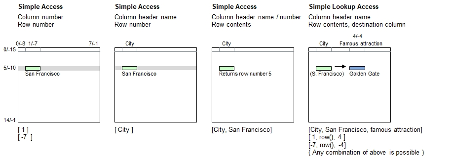

Introduction
If a context for partial partial table specification is provided, then the table name and/or row numbers are optionaland and can be left out. The context refers refers to a specific table and a current row number. The function names listed below are the common ones which support partial table specification:
- with table() to provide a context (table name and row number) directly.
- for all table rows()
- table process() and table process selected rows()
- All standard table functions which contain the term selected rows at the end. In this case, partial table specifciation is allowed in the expression calculated for every row
With such a context available, the row number can also be retrieved directly with the function row().
Syntax for Partial Table Specification
The table must be referenced inside brackets using a combination of literals and/or numerals. These may be constant strings and numbers
or expressions providing literals and numerals.
Example 1: Current table name, current row number, specified column
| [ | Column Specifier | ] |
|---|---|---|
| - Header name(s) | ||
| - Column number(s) | ||
| - : Wildcards | ||
| - Ranges |
Example 2: Other table name, current row number, specified column
| [ | Table Name | : | Column Specifier | ] |
|---|---|---|---|---|
| Must be a literal | - Header name(s) | |||
| - Column number(s) | ||||
| - : Wildcards | ||||
| - Ranges |
Example 3: Current table name, specified row number, specified column
| [ | Column Specifier | , | Row Specifier | ] |
|---|---|---|---|---|
| - Header name(s) | - Matching contents (literal), or | |||
| - Column number(s) | - Row numbers | |||
| - : Wildcards | : Wildcards | |||
| - Ranges | - Ranges |
Syntax for lookup access (Choose column, followed by the row, and pick up data from a different column):
| [ | Column Specifier | , | Row Specifier | , | Column Specifier 2 ] |
|---|---|---|---|---|---|
| - Header name(s) | - Matching contents (literal), or | - Header name(s) | |||
| - Column number(s) | - Row numbers | - Column number(s) | |||
| - : Wildcards | : Wildcards | - : Wildcards | |||
| - Ranges | - Ranges | - Ranges |
Principle

Programming xamples
table load( table, "Examples\Cities.csv");
with table( table, 5 ) // Row 5
{
echo( [ 1 ] );
echo( [ -7 ], new line );
echo( [ City ], new line );
echo( [ City, San Francisco], new line ); // Exception to rule: Returns row number
echo( [ City, San Francisco, Famous attraction] );
echo( [ 1, row(), 4] );
echo( [ -7, row(), -4] );
echo("Horizontal access:");
[table row width( table, row() )] = Street roller;
echo( [0.."State/Province"] );
echo( [..] ); // Entire row (till column with last header on top row)
echo( [] ) ; // Entire row (all elements, inclding the Street roler)
echo( [,6] ) ; // Read data in next row
echo( [,row()-1] ) ; // Read data in previous row
echo( [,0] ); // All header names
echo("Vertical access:");
echo( trim( [0,] ) ); // Column 0, including header ( trim: Countries listed only once )
} Output - Staying in San Francisco
San Francisco
San Francisco
San Francisco
5
Golden Gate
Golden Gate
Golden Gate
Horizontal access:
{'USA','San Francisco','California'}
{'USA','San Francisco','California',805000,'Golden Gate',16,'SFMOMA','Cable car'}
{'USA','San Francisco','California',805000,'Golden Gate',16,'SFMOMA','Cable car','Street roller'}
{'CAN','Montréal','Quebec',1700000,'Hôtel du Parlement','','Rialto Theater','Skidoo'}
{'USA','Boston','Massachusetts',620000,'Freedom trail',43,'','Walking'}
{'Country','City','State/Province','Inhabitants','Famous attraction','Alt. (m)','Famous cultural place','Moving along'}
Vertical access:
{'Country','USA','CAN','DAN','ITA','AUT','THA','SWI','FRA'}